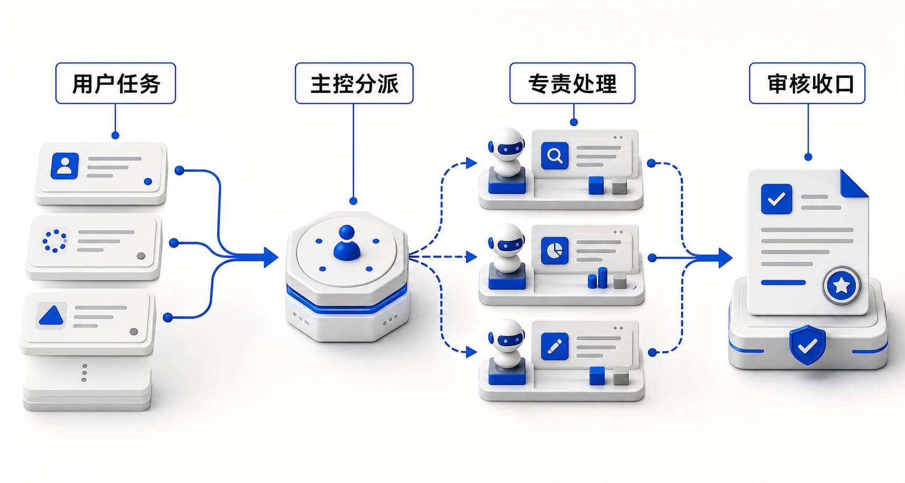

第 4 课 · 多智能体协作：从项目助理到任务小队（学员手册）
文件路径：
/Users/apple/Documents/4.0 Sanyuan/2.4 环境公益"新"力量/course/part-04-scenario/README.md时长 90 分钟 | 课后产出：多智能体协作图 + 交接协议 + 主场景验收测试
前置：完成第 1–3 课，手上有一个已跑通的项目助理（至少挂载 1 个技能 + 1 个知识库，并完成第 3 课 10 问诊断）。
一、这节课要解决什么
第 3 课解决的是：把技能和知识库装进一个统一入口，让项目助理能判断意图、检索资料、调用能力。
第 4 课解决的是另一个问题：当任务变长、风险变高、步骤变多时，一个项目助理不能再「一口气从头做到尾」。它需要拆成一支小队：有人分派任务，有人查资料，有人写初稿，有人做合规审核，有人决定什么时候必须停下来问人。
一句话：第 3 课讲「一个项目助理如何会办事」；第 4 课讲「多个智能体如何一起办成一件事」。

二、先分清三件事
| 形态 | 解决的问题 | 典型表现 | 第 4 课怎么看 |
|---|---|---|---|
| 单一项目助理 | 统一入口、减少手动切换 | 用户问一句，助理自己判断是否调用技能/知识库 | 第 3 课已经完成 |
| 工作流 | 固定步骤、稳定产出 | 先检索、再生成、再检查，顺序相对固定 | 是多智能体的基础 |
| 多智能体协作 | 分工、交接、互审、兜底 | 主控分派，专责智能体处理，审核智能体把关，人负责高风险决策 | 本课重点 |
判断是否需要多智能体，不看「听起来高级不高级」，只看四个信号：
- 任务天然分角色：查资料、写作、审核、发布明显不是同一种判断。
- 中间产物要传递：上一步输出会成为下一步输入，不能只靠聊天记忆。
- 错误代价高：涉及隐私、对外承诺、资金申请、公开发布。
- 需要复用团队经验：不同同事负责不同环节，希望 AI 也按这个协作方式工作。
不满足这些信号时，不要硬拆。单一项目助理 + 清晰工作流就够了。
三、四种多智能体协作模式
3.1 流水线协作：一步交给下一步
适合传播、报告、案例整理这类有明确顺序的任务。
用户任务
↓
资料员智能体：搜集事实、案例、数据、来源
↓
结构员智能体：整理提纲、确定章节与素材位置
↓
写作员智能体：生成初稿，不补没有来源的事实
↓
审核员智能体：查隐私、事实、口径和发布风险
↓
人工确认：决定是否发布 / 提交 / 入库关键不是「多几个名字」，而是每一步都有自己的输入、输出和停止条件。
3.2 主控分派：一个主控决定谁来处理
适合入口复杂、用户说法多、场景分支多的项目助理。
| 主控判断 | 分派对象 | 不该做什么 |
|---|---|---|
| 用户要写项目文书 | 文书智能体 | 不直接生成公开推文 |
| 用户要找历史案例 | 案例智能体 | 不编造未入库案例 |
| 用户要发公众号 | 传播智能体 | 不跳过合规检查 |
| 用户意图不清 | 追问澄清 | 不强行猜测 |
主控智能体的核心能力是判断归属与边界，不是亲自把所有事情做完。
3.3 同伴互审：两个智能体互相挑错
适合质量要求高、但可以先自动自查的任务。
写作智能体输出初稿
↓
审核智能体按清单检查：事实、格式、隐私、语气、缺失项
↓
写作智能体只修改被指出的问题
↓
人工看最终版与风险提示互审不能替代人审。它的价值是把低级错误提前暴露，让人只看关键判断。
3.4 人机共审：高风险节点必须停下来
适合对外公开、资助申请、涉及受益人故事、含未公开数据的任务。
必须停下来的情形：
- 输出中出现真实姓名、联系方式、精确地址、未授权照片描述。
- 涉及资助方承诺、项目结果、财务数字、政策法规判断。
- 知识库没有依据，但模型试图给出确定性表述。
- 用户要求「直接发布」「不用审核」「帮我编个数字」。
第 4 课的底线是：多智能体不是为了让 AI 更放飞，而是为了让关键节点更可控。
四、交接协议：多智能体能不能协作，关键看这一张表
多智能体最常见的失败不是「某个智能体不够聪明」，而是上游没有把任务交清楚。下游只拿到一段含糊聊天记录，就会重复劳动、漏掉事实、甚至接错方向。
每次交接，至少传这 8 项：
| 字段 | 要写清什么 | 示例 |
|---|---|---|
| 任务目标 | 这一步要完成什么 | 生成公众号初稿，不负责最终发布 |
| 输入材料 | 下游能用哪些资料 | 素材卡、历史推文、活动记录 |
| 已确认事实 | 哪些事实已经有依据 | 活动日期、地点、参与人数、来源文档 |
| 不确定项 | 哪些不能猜 | 缺受益人授权、缺最终人数 |
| 输出格式 | 下游必须交付什么结构 | 标题 + 正文 + 配图建议 + 缺失项 |
| 风险标签 | 是否涉及隐私、承诺、财务、政策 | 含受益人故事，需脱敏 |
| 停止条件 | 什么情况下不能继续 | 缺核心事实、含敏感信息未确认 |
| 交给谁 | 下一步由谁处理 | 合规审核智能体 / 人工负责人 |
交接协议不是额外文书，它就是多智能体协作的「接口」。接口不清，协作一定乱。
五、课堂案例：青澜的公众号发布任务小队
讲师逐步话术、提问与巡场见工作区
teaching/lesson-04-multi-agent/instructor-outline.md
学员跟读本章 +handbook.html第四节。
5.1 情境：一句「今晚发」
虚构机构「青澜环境政策研究中心」。同事原话：
帮我把这次社区减塑活动做成公众号推文，今晚发。课堂默认约束：活动记录在知识库，但缺最终人数；记录含志愿者真名；历史推文语气偏克制、重来源；「今晚发」会造成跳过审核的压力。
第 3 课项目助理已会答知识库、能调活动复盘技能。但把「查事实 / 定结构 / 写初稿 / 审风险」塞给同一入口时，最容易一口气写完。
5.2 翻车对照：单一项目助理会跳过什么
不是模型不够聪明，是职责没有切开。
| 翻车点 | 典型表现 | 本课用谁挡住 |
|---|---|---|
| 跳过事实 | 人数写成「近百人」，记录里其实只有「约 40」 | 资料员：缺数就列缺失项，禁止估算 |
| 跳过语气 | 写成鸡汤口号，不像青澜历史推文 | 结构员：先定提纲与语气基准 |
| 跳过脱敏 | 正文出现「志愿者小陈」等真名 | 审核员 + 脱敏规则 |
| 跳过人审 | 直接给「可复制发布」的终稿口吻 | 人机共审：发布前必须人确认 |
课堂自问：只多挂一个「写公众号」技能、角色仍不拆——四个翻车点会消失吗？通常不会，只会写得更快地翻车。
5.3 正解：拆成五个专责角色
| 角色 | 只负责什么 | 输入 | 输出 | 不能做什么 / 人工介入 |
|---|---|---|---|---|
| 主控智能体 | 判断是不是「发公众号」、意图不清则追问 | 用户任务、边界卡 | 分派 + 交接包 | 不直接开写终稿 |
| 资料员智能体 | 事实与来源；缺项列清单 | 活动记录、知识库 | 素材卡 + 缺失项 | 不估算、不编细节；缺关键事实时停止 |
| 结构员智能体 | 提纲与语气基准 | 素材卡、历史推文 | 提纲 + 语气要点 | 不写长文；选题角度可人确认 |
| 写作员智能体 | 按提纲写初稿 | 提纲、素材卡 | 初稿 + 配图建议 | 不补素材卡没有的事实 |
| 审核员智能体 | 隐私、承诺、来源、发布风险 | 初稿、脱敏规则 | 问题清单 + 是否建议人审发布 | 不宣布已可直接发布；发布前必须人确认 |
可 Fork：env-ngo-wechat-research / template / humanize / publish + env-ngo-story-desensitize。
5.4 走读交接包（写作员 → 审核员）
【交接包】
任务目标：发布前检查初稿是否可进入人工确认
输入材料：初稿 v1；素材卡；脱敏规则
已确认事实：活动日期、地点（来自活动记录）
不确定项：现场照片是否已获肖像授权；最终人数缺失
输出格式：问题清单 / 风险等级 / 是否建议进入人工发布
风险标签：含志愿者故事；含号召性结尾
停止条件：含未脱敏姓名或缺核心事实 → 不得建议发布
下一步交给：人工宣传负责人「不确定项」是让下游敢停下。审核只说「语气太飘」→ 回写作员局部返工，不重跑资料全链路。
5.5 三条课堂追问
- 四个翻车点里，你们机构最近一次「差点发出去」的是哪一类？
- 主控和写作员的边界一句话怎么划？
- 缺最终人数时，资料员正确输出是什么？（缺失项清单，不是「近百人」）
青澜这条链 = 样板库 M3 传播小队主路径。不全是做公众号时，用下一节三条小队选主场景。
5.6 场景型任务小队（与学员指引联动）
多技能挂载后，要问清：谁调用哪个技能、中间产物怎么交、哪里必须人审。完整速查与角色卡见 场景型任务小队样板库。
纪律：只选一条主场景；周报→推文、节点↔FAQ 是传播变体。
| 小队 | 痛点（为何拆） | 挡住的失败（摘要） | 必停人审 |
|---|---|---|---|
| M1 文书 | 结构像样、数字站不住、承诺写过头 | 资料不齐开写；数字与写作混在一角色；无承诺审核 | 成效承诺、财务、未公开政策建议 |
| M2 案例沉淀 | 语音/记录直接进库或外发残留 PII | 补戏；未脱敏入库；无可复用案例卡 | 故事是否可引用、肖像/语音授权 |
| M3 传播 | 查/写/审粘在一起（= 青澜） | 跳过事实/语气/脱敏/人审；FAQ 与宣发抢戏 | 科普事实、肖像授权、「直接发」 |
选队后写下：
我的主场景走 _____ 小队；主控交给 _____ / _____ / _____；
人审点在 _____（具体触发条件，不要写「注意一下」）。六、动手练习：把你的主场景拆成一支任务小队
先对照样板库，再自己拆。 完整速查表、三条深写小队（文书 / 案例沉淀 / 传播）、交接包示例与预制测试，见：
- 网页：场景型任务小队样板库
- Markdown：
course/part-04-scenario/scenario-squads.md个人 MVP 细节仍以自己的 学员指引 为准；本课公开材料只用脱敏场景类型。
6.1 选择一个主场景
不要同时拆三个场景。先选最希望同事稳定使用的一条链路：
| 模块 | 推荐主场景 | 适合拆出的智能体 | 样板库入口 |
|---|---|---|---|
| M1 项目文书链 | 资助申请 / 项目书 / 结项报告 | 资料员、文书员、指标核对员、审核员 | 文书小队 |
| M2 案例与知识沉淀 | 原始记录 → 脱敏案例 → 入库 | 记录整理员、脱敏员、案例萃取员、入库审核员 | 案例沉淀小队 |
| M3 传播与运营 | 活动素材 → 公众号草稿 → 发布前检查 | 资料员、结构员、写作员、审核员 | 传播小队 |
台账→周报→推文、节点宣发↔FAQ 等变体，见样板库速查表，不必另开第三条主场景。
6.2 写角色卡
每个智能体只写 5 件事：
| 字段 | 填写 |
|---|---|
| 智能体名称 | 如：资料员智能体 |
| 只负责什么 | 一句话，越窄越好 |
| 必读资料 | 知识库、技能、模板、脱敏规则 |
| 输出格式 | 明确字段和顺序 |
| 不能做什么 | 不编造、不越权、不直接发布等 |
示例：
智能体名称：审核员智能体
只负责什么：检查公众号初稿是否可以进入人工发布确认
必读资料：脱敏规则、发布审校清单、素材卡来源
输出格式：问题清单 / 风险等级 / 是否建议进入人工发布
不能做什么：不能替机构做最终发布决定，不能删除事实来掩盖风险6.3 写交接包
【交接包】
任务目标：
输入材料：
已确认事实：
不确定项：
输出格式：
风险标签：
停止条件：
下一步交给：练习要求：任选两个相邻智能体，至少写出 1 份真实交接包。
6.4 标出共享状态
不是所有信息都要塞给每个智能体。按三类分清：
| 状态类型 | 谁能看 | 例子 |
|---|---|---|
| 全局共享 | 主控 + 所有专责智能体 | 用户目标、项目边界、禁区、最终成功标准 |
| 局部共享 | 相邻上下游 | 素材卡、提纲、初稿、审核意见 |
| 人工保留 | 只给负责人 | 未公开预算、个人联系方式、未经授权照片 |
共享状态越清晰，越不容易出现「下游不知道上游已经确认过什么」或「敏感信息被不必要地扩散」。
七、协作验收测试
课堂最后用 5 条测试判断任务小队是否真的能工作。
| 测试类型 | 测什么 | 通过标准 |
|---|---|---|
| 正常任务 | 一条完整任务能否从主控走到审核 | 角色分派正确，交接包完整 |
| 缺资料 | 核心事实缺失时是否停下 | 明确列缺失项，不编造 |
| 易混任务 | 相邻场景是否走错智能体 | 主控能追问或分派到正确角色 |
| 合规风险 | 含个人信息或对外承诺时是否拦截 | 审核员标风险，进入人工确认 |
| 返工闭环 | 审核未通过时是否回到正确上游 | 只返工问题部分，不重做全链路 |
记录表：
| # | 测试任务 | 期望路径 | 实际路径 | 失败位置 | 修改动作 |
|---|---|---|---|---|---|
| 1 | 主控 → 资料员 → 写作员 → 审核员 → 人审 | ||||
| 2 | |||||
| 3 | |||||
| 4 | |||||
| 5 |
八、课堂时间分配
| 环节 | 时长 | 内容 | 产出 |
|---|---|---|---|
| 4.1 概念重定位 | 10 分钟 | 单一项目助理、工作流、多智能体的区别 | 判断是否需要拆分 |
| 4.2 协作模式 | 20 分钟 | 流水线、主控分派、同伴互审、人机共审 | 选择主模式 |
| 4.3 青澜案例 + 样板库对照 | 20 分钟 | 公众号小队 + 按 MVP 选文书/案例/传播模板 | 选中的小队参考图 |
| 4.4 自己动手拆 | 25 分钟 | 对照样板库填角色卡、交接包、共享状态 | 多智能体协作图 |
| 4.5 协作验收 | 15 分钟 | 用该小队预制 5 条测试 + 失败写回 | 修正清单 |
九、课后作业（分层）
| 层级 | 必交产物 | 验收标准 |
|---|---|---|
| 入门（用起来） | 1 张多智能体协作图 + 2 张角色卡 + 1 份交接包 | 能讲清谁负责什么、何时交给谁、哪里需要人审 |
| 进阶（用得顺） | 4 张以上角色卡 + 3 份交接包 + 5 条协作测试记录 | 至少 4/5 测试通过；失败能定位到角色、交接或审核点 |
下课带走一句话：「我的主场景由 _____ 主控，交给 _____ / _____ / _____ 处理，最后由 _____ 审核收口。」
十、给技术同学的框架对照
本课不要求写代码，但你会在主流多智能体框架里看到相同概念：
| 本课说法 | 代码框架里常见说法 | 你真正要掌握的意思 |
|---|---|---|
| 主控智能体 | supervisor / router | 判断任务该交给谁 |
| 专责智能体 | specialist agent / sub-agent | 只做好一个窄任务 |
| 交接包 | handoff payload / state | 传结构化上下文，而不是含糊聊天记录 |
| 审核员 | guardrail / evaluator | 检查风险、格式、事实和边界 |
| 人工确认 | human-in-the-loop | 高风险节点停下来让人决策 |
| 运行记录 | trace / log | 复盘每一步为什么这么走 |
无代码平台也能练这些概念：用角色提示词、工作流节点、表格模板、人工审核点来模拟；有技术储备的机构后续再把它迁移到代码框架。
十一、交给第 5 课的发布候选包
第 5 课不再只看「项目助理能不能回答」，而要看这条协作链是否可以交给同事内测。
下课前，请填写：
- 第 4 → 第 5 课交接包：
/Users/apple/Documents/4.0 Sanyuan/2.4 环境公益"新"力量/course/bridge-materials/templates/04_to_05_release_candidate_pack.md - 课程产物跟踪表：
/Users/apple/Documents/4.0 Sanyuan/2.4 环境公益"新"力量/course/bridge-materials/templates/cross_lesson_artifact_tracker.md
第 5 课会重点检查：主场景是否有清晰角色分工、交接包是否完整、人工审核点是否明确、5 条协作测试是否通过。
十二、下一课预告
多智能体协作图完成后，你已经知道「谁做什么、怎么交接、哪里必须人审」。第 5 课《成果盘点与预发布》会把这条链路变成可内测的发布候选：跑演示、分级缺陷、确定试用同事，并写好上线后的反馈写回规则。